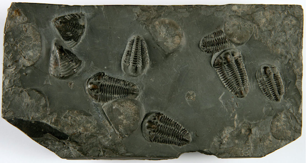

Trace fossils consist mainly of tracks and burrows, but also include coprolites (fossil feces) and marks left by feeding.[32][38] Trace fossils are particularly significant because they represent a data source that is not limited to animals with easily fossilised hard parts, and they reflect organisms' behaviours. Also many traces date from significantly earlier than the body fossils of animals that are thought to have been capable of making them.[39] Whilst exact assignment of trace fossils to their makers is generally impossible, traces may for example provide the earliest physical evidence of the appearance of moderately complex animals (comparable to earthworms).
